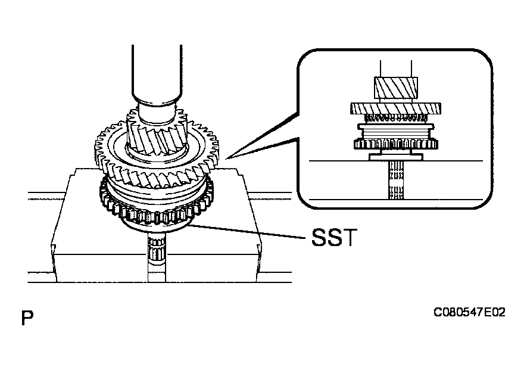
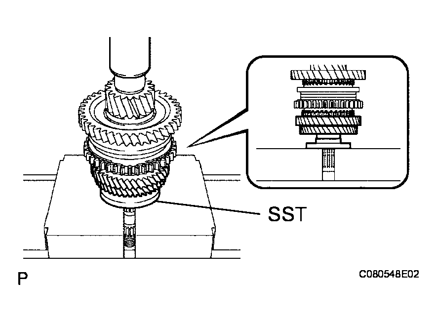
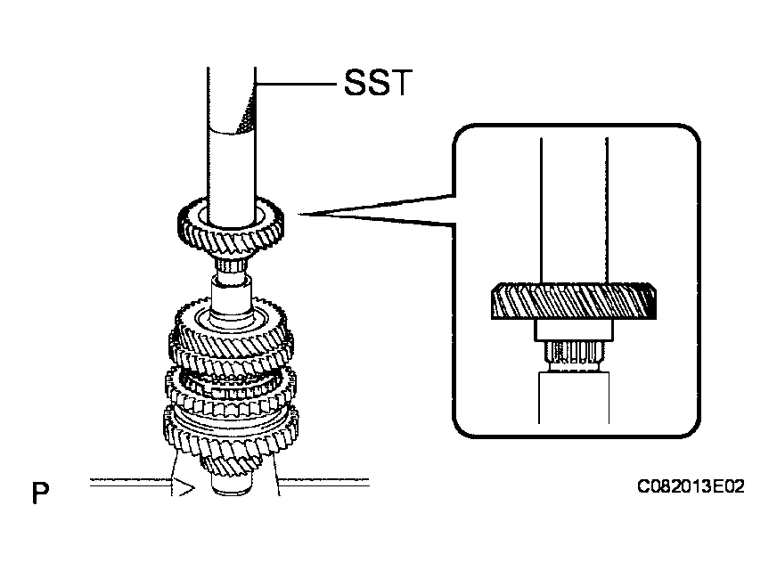
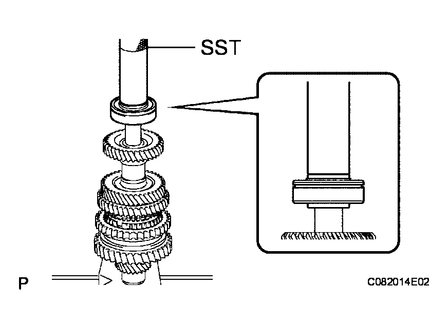

Output Shaft: Reassembly
- INSTALL REVERSE GEAR
- Coat the reverse gear with gear oil, and install it to the No. 1 transmission clutch hub.NOTE: Be sure to set the reverse gear and transmission clutch hub No.1 in the correct orientation.
- Install the 2 No. 1 synchromesh shifting key springs and 3 No. 1 synchromesh shifting keys to the No. 1 transmission clutch hub.NOTE: Do not set both openings of the shifting key springs in the same position.
- Coat the reverse gear with gear oil, and install it to the No. 1 transmission clutch hub.
- INSTALL 1ST GEAR THRUST WASHER BALL
- Coat the 1st gear thrust washer ball with MP grease, and install it to the output shaft.
- INSTALL 1ST GEAR THRUST WASHER
- Coat the 1st gear thrust washer with gear oil, and install it to the output shaft.
- INSTALL 1ST GEAR NEEDLE ROLLER BEARING
- Coat the 1st gear needle roller bearing with gear oil, and install it to the output shaft.
- INSTALL 1ST GEAR
- Coat the 1st gear with gear oil, and install it to the output shaft.
- INSTALL NO. 1 SYNCHRONIZER RING (for 1st Gear)
- Coat the No. 1 synchronizer ring with gear oil, and install it to the 1st gear.
- INSTALL NO. 1 TRANSMISSION CLUTCH HUB
- Using SST and a press, press in the No. 1 transmission clutch hub to the output shaft.
SST 09316-60011 (09316-00031)

Courtesy of © TOYOTA, LICENSE AGREEMENT TMS1002HINT:
- The 1st gear can be turned.
- While checking that the 1st gear thrust washer pin or ball is inserted into the groove of the 1st gear thrust washer, press and fit the No. 1 clutch hub.
- Select a snap ring that will allow minimum axial play.
Standard clearance: 0.1 mm (0.004 in.) or less
Standard snap ring thickness
SNAP RING THICKNESS SPECIFICATIONMark Thickness mm (in.) A 2.50 (0.0984) B 2.56 (0.1008) C 2.62 (0.1031) D 2.68 (0.1055) E 2.74 (0.1079) F 2.80 (0.1102) - Using a brass bar and hammer, tap in the snap ring to the output shaft.
NOTE: Take care not to damage the journal surface of the output shaft.
- Using SST and a press, press in the No. 1 transmission clutch hub to the output shaft.
- INSTALL 2ND GEAR NEEDLE ROLLER BEARING
- Coat the 2nd gear needle roller bearing and 2nd gear bearing spacer with gear oil, and install them to the output shaft.
- INSTALL NO. 1 SYNCHRONIZER RING
- Coat the No. 1 synchronizer ring with gear oil, and install it to the 2nd gear.
- INSTALL 2ND GEAR
- Coat the 2nd gear with gear oil, and install it to the output shaft.
- INSTALL 3RD DRIVEN GEAR
- Using SST and a press, press in the 3rd driven gear to the output shaft.

Courtesy of © TOYOTA, LICENSE AGREEMENT TMS1002SST 09950-00020
- Using SST and a press, press in the 3rd driven gear to the output shaft.
- INSTALL OUTPUT GEAR SPACER
- Install the output gear spacer to the output shaft.
- INSTALL 4TH DRIVEN GEAR
- Using SST and a press, press in the 4th driven gear to the output shaft.

Courtesy of © TOYOTA, LICENSE AGREEMENT TMS1002SST 09612-22011
- Using SST and a press, press in the 4th driven gear to the output shaft.
- INSTALL INPUT SHAFT REAR RADIAL BALL BEARING
- Using SST and a press, press in the output shaft rear bearing to the output shaft.

Courtesy of © TOYOTA, LICENSE AGREEMENT TMS1002SST 09612-22011
- Using SST and a press, press in the output shaft rear bearing to the output shaft.
- INSPECT 2ND GEAR RADIAL CLEARANCE
- Using a dial indicator, measure the radial clearance.
Standard clearance
GEAR RADIAL CLEARANCE REFERENCEItem Specified Condition KOYO made 0.015 to 0.058 mm (0.0006 to 0.0023 in.) NSK made 0.015 to 0.056 mm (0.0006 to 0.0022 in.) Maximum clearance
GEAR RADIAL CLEARANCE REFERENCEItem Specified Condition KOYO made 0.058 mm (0.0023 in.) NSK made 0.056 mm (0.0022 in.) If the clearance is greater than the maximum, replace the 2nd gear or needle roller bearing.
- Using a dial indicator, measure the radial clearance.
- INSPECT 1ST GEAR RADIAL CLEARANCE
- Using a dial indicator, measure the radial clearance.
Standard clearance
GEAR RADIAL CLEARANCE REFERENCEItem Specified Condition KOYO made 0.015 to 0.058 mm (0.0006 to 0.0023 in.) NSK made 0.015 to 0.056 mm (0.0006 to 0.0022 in.) Maximum clearance
GEAR RADIAL CLEARANCE REFERENCEItem Specified Condition KOYO made 0.058 mm (0.0023 in.) NSK made 0.056 mm (0.0022 in.) If the clearance is greater than the maximum, replace the 1st gear or needle roller bearing.
- Using a dial indicator, measure the radial clearance.
- INSPECT 2ND GEAR THRUST CLEARANCE
- Using a dial indicator, measure the thrust clearance.
Standard clearance: 0.10 to 0.45 mm (0.0039 to 0.0177 in.)
Maximum clearance: 0.45 mm (0.0177 in.)
If the clearance is greater than the maximum, replace the 2nd gear or 2nd gear bearing spacer.
- Using a dial indicator, measure the thrust clearance.
- INSPECT 1ST GEAR THRUST CLEARANCE
- Using a feeler gauge, measure the 1st gear thrust clearance.
Standard clearance: 0.10 to 0.40 mm (0.0039 to 0.0157 in.)
Maximum clearance: 0.40 mm (0.0157 in.)
If the clearance is greater than the maximum, replace the 1st gear, 1st gear thrust washer or No. 1 transmission clutch hub.
- Using a feeler gauge, measure the 1st gear thrust clearance.